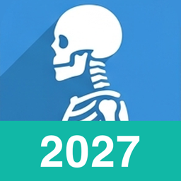
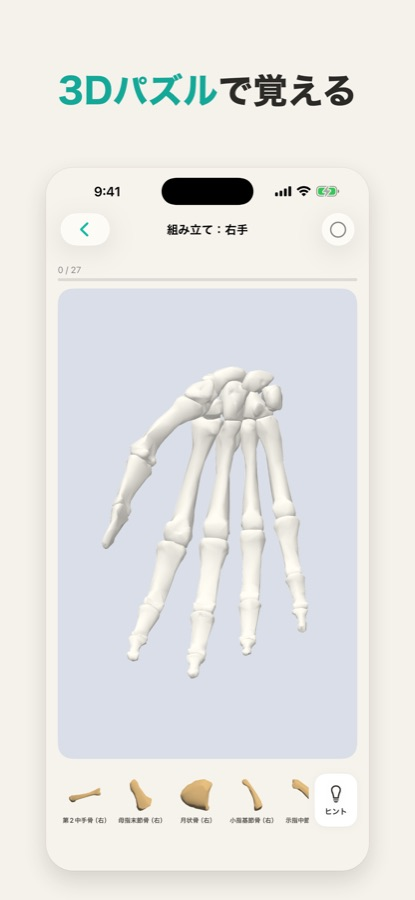
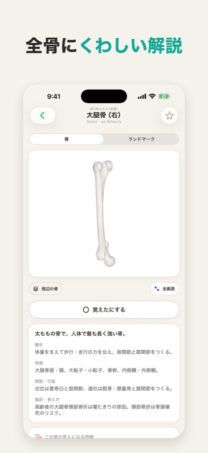
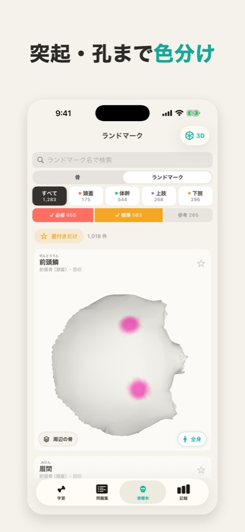
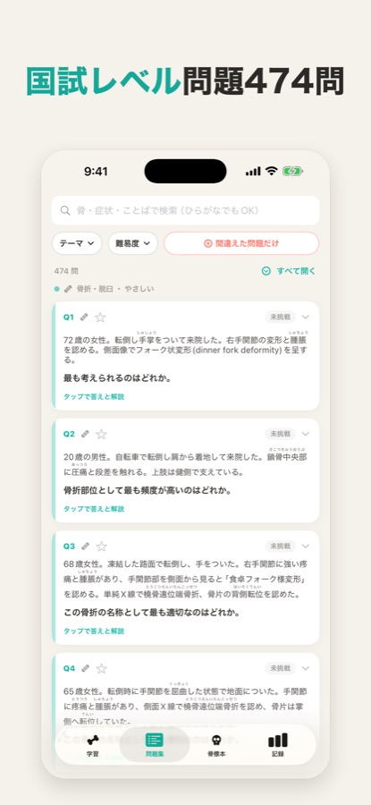
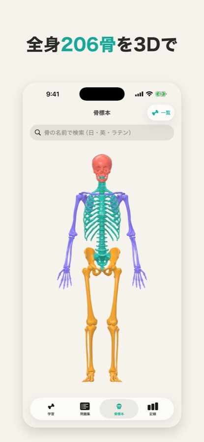

3D骨格・解剖学｜骨暗記と国試2027対策
全身206個の骨を、3Dで回して覚える。医療系国家試験の骨学対策アプリ（iPhone・iPad）
どんなアプリ？
「骨の名前が覚えられない」を、3Dとゲーム感覚で終わらせるための学習アプリです。全身206個の骨を実際の3Dモデルで自由に回転・拡大し、名前・ふりがな・ラテン語・ランドマーク（突起や孔）まで、国家試験に必要な骨の知識をまとめて学べます。
対象：看護師・理学療法士（PT）・作業療法士（OT）・柔道整復師・診療放射線技師・救急救命士・医学部・歯学部など、解剖学（骨学）を学ぶ学生と、学び直したい方。





できること
3D骨格パズル
バラバラの骨を全身・部位ごとに組み立てて、位置関係ごと覚える（ヒントつき）。
骨→名前／名前→骨クイズ
苦手優先・まだ覚えていない骨だけ・星をつけた骨だけ、で絞り込み出題。
フラッシュカード
「覚えた／まだ」で仕分けて、自分のペースで反復。
ランドマーク 1,283 か所
突起・孔・切痕などを3Dモデル上に色分けで表示。
国試形式の臨床問題 470 問以上
オリジナル問題・解説つき。テーマ・難易度・間違えた問題で絞り込み、問題から対象の骨の3Dへ移動。
206骨すべてに解説
働き・特徴・関節／付着・臨床のポイント。難しい漢字にはふりがな。
1分チャレンジ
スキマ時間に臨床問題で腕試し。
続けられる仕組み
今日の1問・学習ストリーク・積み上げグラフ・毎日の通知・ホーム画面ウィジェット。
料金
| 無料 | 骨標本（全206骨の3Dと解説）はいつでも無料。各学習モードは1日2回まで、問題集の解説は1日3問まで（広告あり・広告を見ると回数を追加） | 0円 |
|---|---|---|
| プレミアム 週額 | 広告なし・学習／解説／絞り込みが無制限 | 300円 |
| プレミアム 月額 | 同上 | 600円 |
| プレミアム 年額 | 同上・7日間無料体験つき | 3,000円 |
| プレミアム 買い切り | 同上・一度の購入でずっと | 4,800円 |
価格は日本のApp Storeでの税込価格です（2026年11月時点）。サブスクリプションは期間終了の24時間前までに解約しない限り自動更新されます。
よくある質問
- 骨の名前を覚えるおすすめのアプリは？
- このアプリは、全身206個の骨を3Dで回しながら、名前クイズ・フラッシュカード・3D骨格パズルで覚えられます。基本無料です。
- 看護師・理学療法士の国家試験の骨の勉強に使えますか？
- 使えます。国試形式のオリジナル臨床問題470問以上（解説つき）と、206骨すべての解説を収録しています。初回起動時に職種を選べます。
- 無料で使えますか？
- はい。骨標本はいつでも無料、学習モードは1日2回まで無料で使えます（広告あり）。
- Androidで使えますか？
- 現在はiPhone・iPad（iOS 16以降）向けのみです。
In English
3D Skeleton: Bone Anatomy Quiz — an iPhone and iPad app to master all 206 bones of the human skeleton with real 3D models. Bone-to-name and name-to-bone quizzes, flashcards, a 3D skeleton puzzle, 1,283 bony landmarks highlighted on the model, and 470+ original exam-style clinical questions with explanations. For medical, nursing, physiotherapy, occupational therapy and dental students. Free to start. Get it on the App Store.